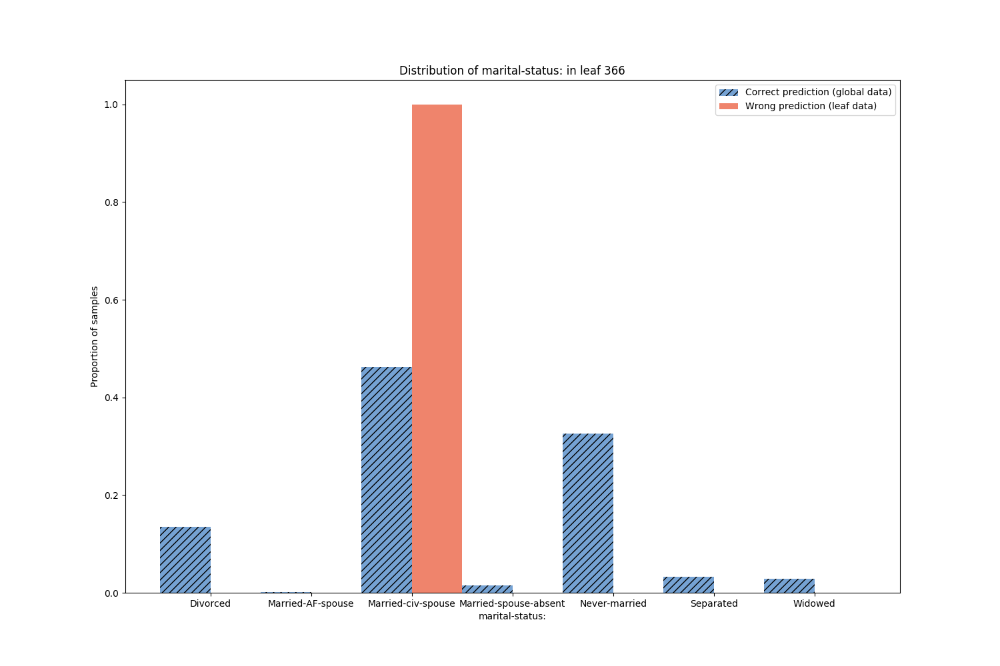
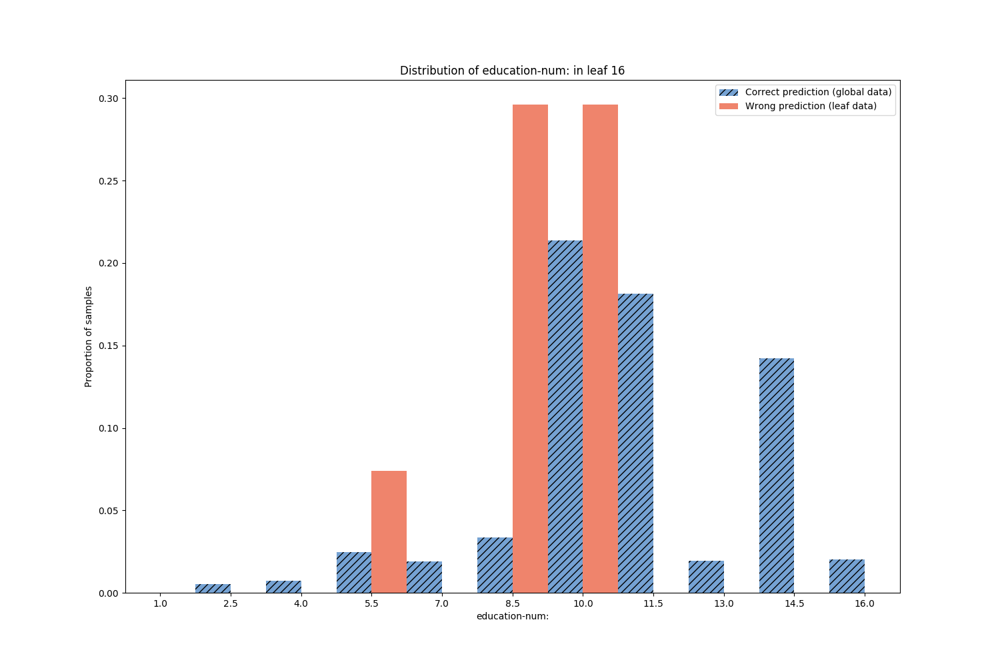
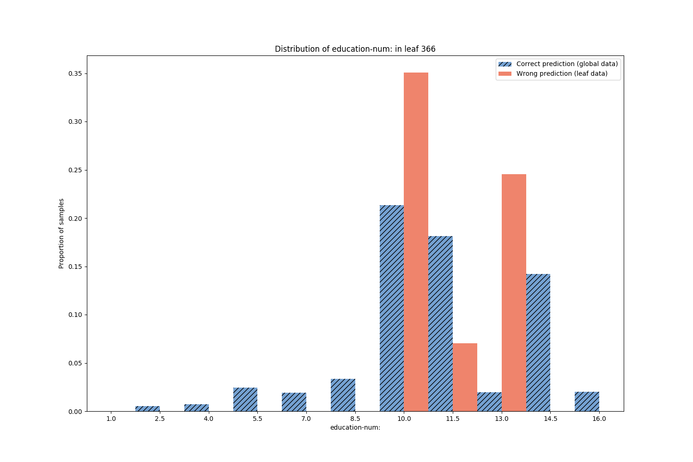

Note
Click here to download the full example code
Model Error Analysis with scikit-learn Pipeline for the Adult income dataset¶
Here we train a RandomForestClassifier to predict whether a person gains more or less than 50k per year. This is our primary model. Before training the primary model we preprocess the categorical and numeric features of the dataset by means of a scikit-learn Pipeline. Then we build a secondary model, called Model Performance Predictor (MPP), to predict on what samples the primary model returns wrong or correct predictions. The MPP is a DecisionTree returning a binary outcome success/failure. The leaf nodes yielding failure outcome gather the samples mis-predicted by the primary model. Plotting the feature distributions of these samples and comparing to the whole data highlights the subpopulations where the model works poorly.
Those are the necessary imports and initializations.
from sklearn.model_selection import train_test_split
from sklearn.ensemble import RandomForestClassifier
from sklearn.compose import ColumnTransformer
from sklearn.preprocessing import StandardScaler, OneHotEncoder
from sklearn.impute import SimpleImputer
from sklearn.pipeline import Pipeline
import pandas as pd
import numpy as np
import random
import matplotlib.image as mpimg
import matplotlib.pyplot as plt
from mea.error_analyzer import ErrorAnalyzer
from mea.error_visualizer import ErrorVisualizer
default_seed = 10
np.random.seed(default_seed)
random.seed(default_seed)
Load Adult income dataset.
adult_income_url = 'https://www.openml.org/data/get_csv/54002/adult-census.arff'
df = pd.read_csv(adult_income_url)
target = 'class'
X = df.dropna().drop(target, axis=1)
y = df.dropna()[target]
X_train, X_test, y_train, y_test = train_test_split(X, y, test_size=0.2)
numeric_features = df.select_dtypes(include=['int64', 'float64']).columns.tolist()
categorical_features = df.select_dtypes(include=['object']).drop([target], axis=1).columns.tolist()
feature_names = numeric_features + categorical_features
print('Categorical features of the adult dataset:')
print(categorical_features)
print('Numeric features of the adult dataset:')
print(numeric_features)
Out:
Categorical features of the adult dataset:
['workclass', 'education:', 'marital-status:', 'occupation:', 'relationship:', 'race:', 'sex:', 'native-country:']
Numeric features of the adult dataset:
['ID', 'age', 'fnlwgt:', 'education-num:', 'capital-gain:', 'capital-loss:', 'hours-per-week:']
Build the preprocessing Pipeline.
numeric_transformer = Pipeline(steps=[
('imputer', SimpleImputer(strategy='median')),
('scaler', StandardScaler())])
categorical_transformer = Pipeline(steps=[
('imputer', SimpleImputer(strategy='constant', fill_value='missing')),
('onehot', OneHotEncoder(handle_unknown='ignore'))])
preprocessor = ColumnTransformer(
transformers=[
('num', numeric_transformer, numeric_features),
('cat', categorical_transformer, categorical_features)])
model = Pipeline(steps=[('preprocessor', preprocessor),
('classifier', RandomForestClassifier())])
Train preprocessing Pipeline and RandomForestClassifier.
model.fit(X_train, y_train)
acc_score = model.score(X_test, y_test)
print("Acc = %.2f" % acc_score)
Out:
Acc = 0.85
Fit a Model Performance Predictor on the model performances.
error_analyzer = ErrorAnalyzer(model, feature_names=feature_names)
error_analyzer.fit(X_test, y_test)
Print metrics regarding the Model Performance Predictor.
print(error_analyzer.mpp_summary(X_test, y_test, output_dict=False))
Out:
The MPP was trained with accuracy 85.67%.
The Decision Tree estimated the primary models accuracy to 95.33%.
The true accuracy of the primary model is 85.15.%
The Fidelity of the MPP is 89.82%.
Warning: the built MPP might not be representative of the primary model performances.
The MPP predicted model accuracy is considered too different from the true model accuracy.
Plot the Model Performance Predictor Decision Tree.
error_visualizer = ErrorVisualizer(error_analyzer)
tree_src = error_visualizer.plot_error_tree()
# the output of ``plot_error_tree`` is rendered automatically in a python notebook
# the following is for rendering in this sphynx gallery
tree_src.format = 'png'
tree_src.render('tree')
tree_img = mpimg.imread('tree.png')
plt.figure(figsize=(20, 20))
plt.imshow(tree_img)
plt.axis('off')
Print the details regarding the decision tree nodes containing the majority of errors.
error_analyzer.error_node_summary(leaf_selector="all_errors", add_path_to_leaves=True, print_summary=True);
Out:
LEAF 130:
Correct predictions: 25 | Wrong predictions: 38 | Local error (purity): 0.60 | Global error: 0.04
Path to leaf:
marital-status: == Married-civ-spouse
capital-gain: <= 4760.50
education-num: > 8.50
capital-loss: <= 1836.50
age > 29.50
age <= 66.50
education-num: <= 13.50
hours-per-week: > 32.50
ID <= 1.62
occupation: != Machine-op-inspct
ID <= 1.41
occupation: == Prof-specialty
age <= 39.50
LEAF 136:
Correct predictions: 22 | Wrong predictions: 32 | Local error (purity): 0.59 | Global error: 0.03
Path to leaf:
marital-status: == Married-civ-spouse
capital-gain: <= 4760.50
education-num: > 8.50
capital-loss: <= 1836.50
age > 29.50
age <= 66.50
education-num: <= 13.50
hours-per-week: > 32.50
ID > 1.62
LEAF 104:
Correct predictions: 30 | Wrong predictions: 35 | Local error (purity): 0.54 | Global error: 0.04
Path to leaf:
marital-status: == Married-civ-spouse
capital-gain: <= 4760.50
education-num: > 8.50
capital-loss: <= 1836.50
age > 29.50
age <= 66.50
education-num: <= 13.50
hours-per-week: > 32.50
ID <= 1.62
occupation: != Machine-op-inspct
ID <= 1.41
occupation: != Prof-specialty
workclass != Self-emp-inc
ID <= 1.17
ID <= 0.07
ID <= -0.09
ID <= -0.97
ID > -1.37
age <= 44.50
LEAF 115:
Correct predictions: 25 | Wrong predictions: 28 | Local error (purity): 0.53 | Global error: 0.03
Path to leaf:
marital-status: == Married-civ-spouse
capital-gain: <= 4760.50
education-num: > 8.50
capital-loss: <= 1836.50
age > 29.50
age <= 66.50
education-num: <= 13.50
hours-per-week: > 32.50
ID <= 1.62
occupation: != Machine-op-inspct
ID <= 1.41
occupation: != Prof-specialty
workclass != Self-emp-inc
ID <= 1.17
ID <= 0.07
ID > -0.09
LEAF 128:
Correct predictions: 33 | Wrong predictions: 36 | Local error (purity): 0.52 | Global error: 0.04
Path to leaf:
marital-status: == Married-civ-spouse
capital-gain: <= 4760.50
education-num: > 8.50
capital-loss: <= 1836.50
age > 29.50
age <= 66.50
education-num: <= 13.50
hours-per-week: > 32.50
ID <= 1.62
occupation: != Machine-op-inspct
ID <= 1.41
occupation: != Prof-specialty
workclass == Self-emp-inc
Plot the feature distributions of samples in LEAF 130 containing the majority of errors.
Rank features by correlation to error.
error_visualizer.plot_feature_distributions_on_leaves(leaf_selector=130, top_k_features=3)
- 
- 
- 
Out:
Leaf 130 (Wrong prediction: 0.603, Correct prediction: 0.397)
Discussion¶
Model Performance Predictor Metrics¶
We are dealing with a binary classification task. Here the primary predictions of “income less or more than 50k” have been categorized in two classes: ‘Correct prediction’ and ‘Wrong prediction’ according to the difference from the true class. The accuracy is then the number of Correct predictions over the total. The MPP is representative of the behavior of the primary model as the true primary accuracy and the one estimated by the MPP are close.
Model Failures¶
Let’s focus on the nodes of the MPP DecisionTree, in particular the leaf nodes
of class ‘Wrong prediction’. These leaves contain the majority of errors, each
leaf clustering a subpopulation of errors with different feature values. The largest
and purest failure nodes are highlighted when printing the error node summary, and
also when plotting the feature distributions in the node (leaf_selector="all_errors").
From the feature distributions, sorted by correlation with the error, we can see that
the majority of problems occur for young married people with high education.
In the next iteration of model design, the primary model needs to be improved for these
subpopulations.
Total running time of the script: ( 0 minutes 25.033 seconds)
Estimated memory usage: 897 MB